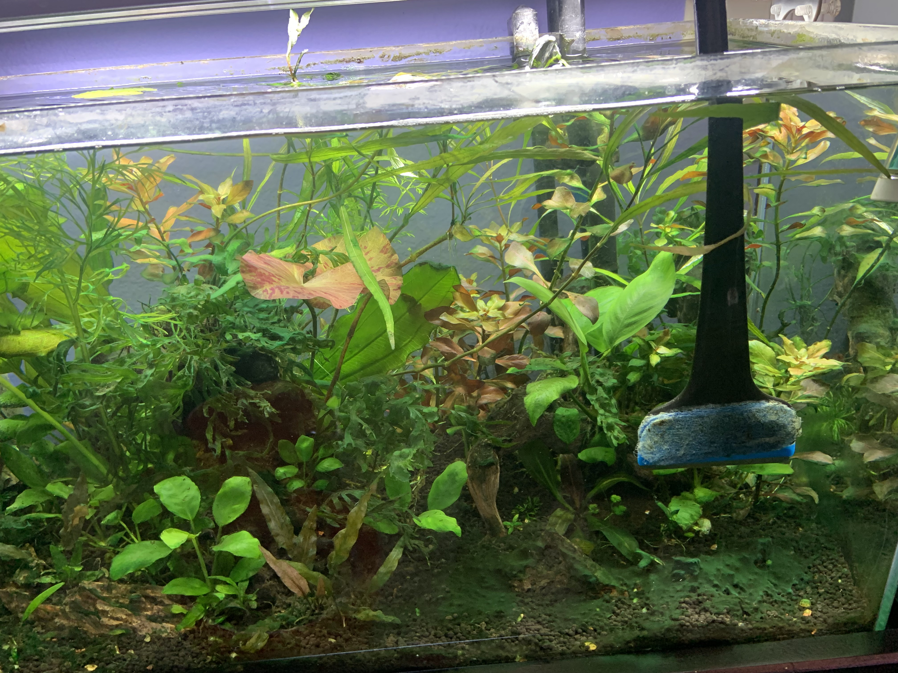
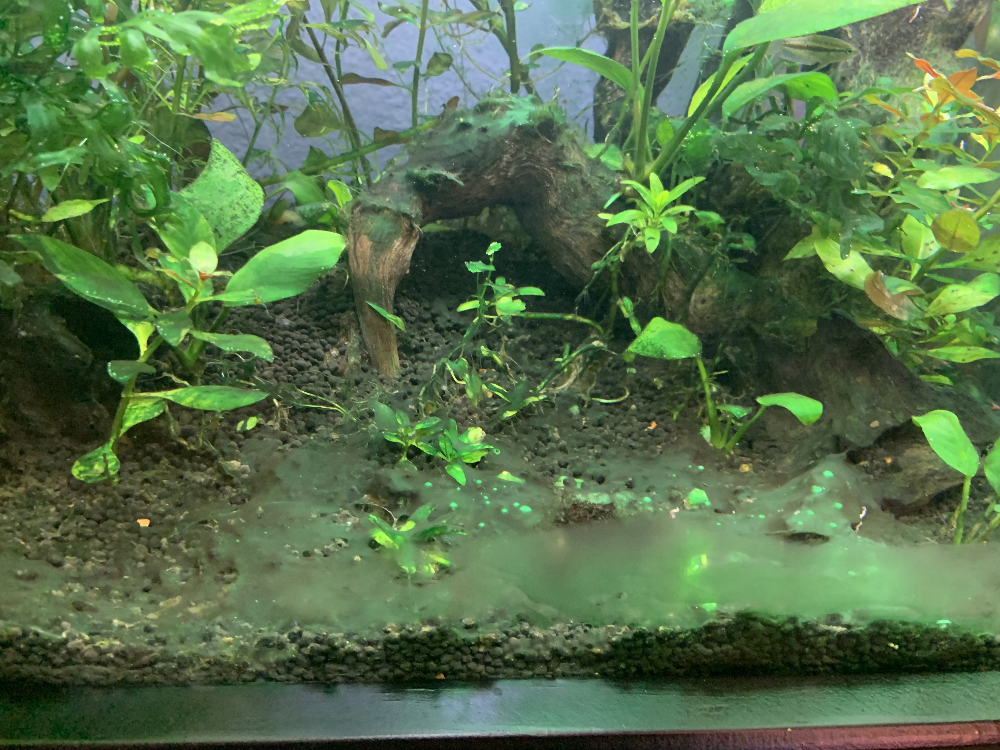
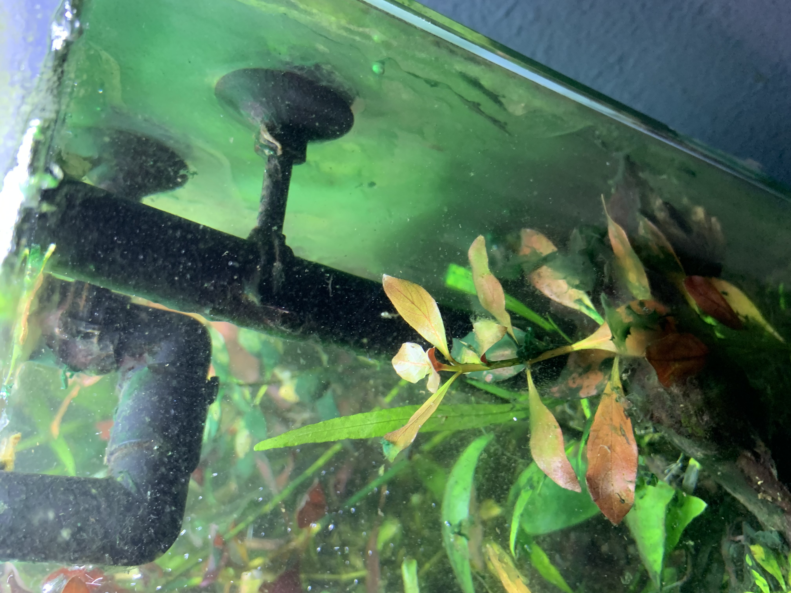
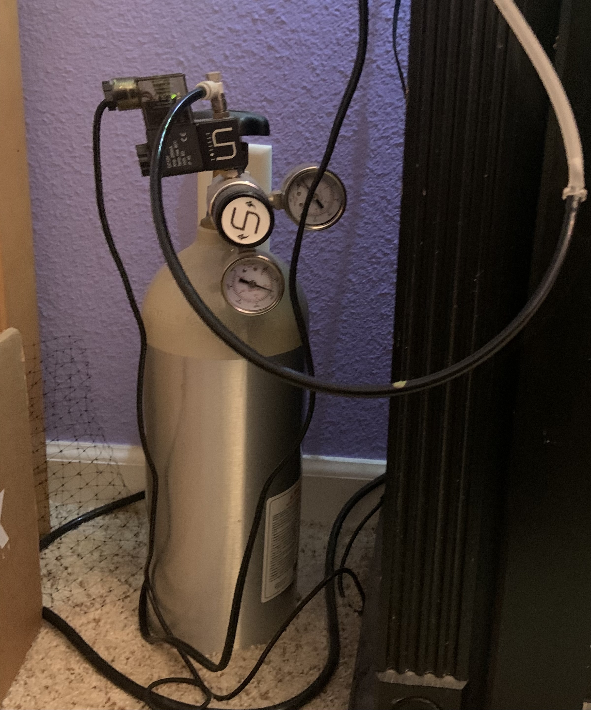
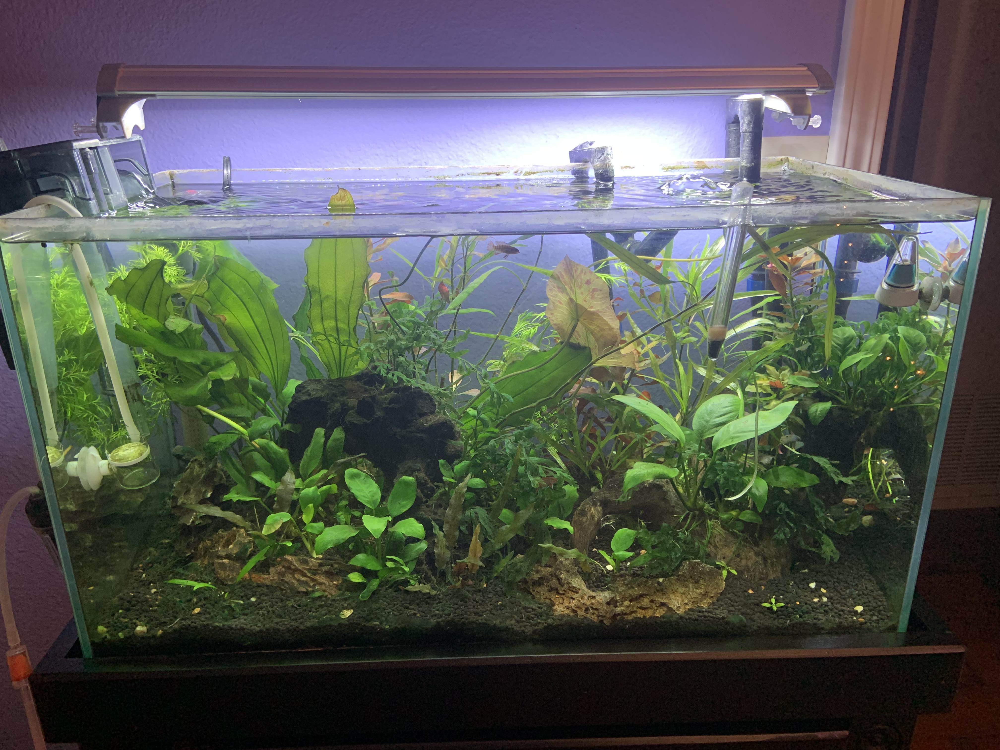

7/31/2021: appearence of cyanobacteria

2021: A few months into my newest aquscape, a weird slimy growth overtook the tank. I thought it was algae at first, so I unsuccessfully tried to get rid of it by lowering the Co2 dosage in my tank. However,I discovered it was actually a type of cyanobacteria, a living organism that required a different approach
8/15/2021: bacteria multiplies exponentially

8/30/2021: growth worsening

10/13/202: implementing reduction strategies

I instead tried doubling the Co2 dosage so that the indicator turned green, not blue, and added in Potassium, Iron, and liquid carbon (1 capful per day of each)
11/30/2021: defeated the enemy!
